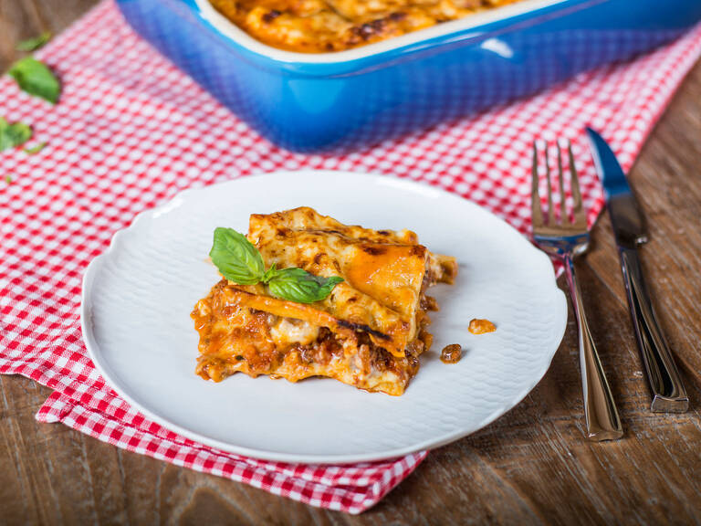

Lasagne

Zutaten für
1 Zehe
Knoblauch
1
Zwiebel
2
Karotten
500 g
Rinderhackfleisch
800 g
stückige Tomaten aus der Dose
2 TL
Oregano
50 g
Butter
40 g
Mehl
500 ml
Milch
1/4 TL
Muskatnuss gemahlen
150 g
Lasagneplatten
60 g
Parmesan
Zubereitung
Knoblauch fein hacken. Zwiebel und Karotten schälen und würfeln. Etwas Olivenöl in einer großen Pfanne erhitzen und die Zwiebeln, Karotten und Knoblauch anbraten. Das Rinderhackfleisch mit Hilfe eines Kochlöffels gleichmäßig anbraten. Mit Salz und Pfeffer abschmecken.
Dann die gehackten Tomaten hinzugeben und erneut mit Salz und Pfeffer würzen. Mit geschlossenem Deckel bei mittlerer Hitze für etwa 15-20 Min. köcheln lassen. Den getrockneten Oregano einrühren.
Den Ofen auf 200°C vorheizen. Für die Béchamelsauce, die Butter in einem kleinen Topf schmelzen. Mehl dazugeben und unter Rühren anrösten.
Nach und nach und unter ständigem Rühren kalte Milch hinzugeben und die Hitze reduzieren, für etwa 5-8 Min. Mit Muskat, Salz und Pfeffer abschmecken.
Den Boden der Auflaufform mit Olivenöl und danach mit einer Schicht Béchamel bedecken. Jetzt erst Lasagneblätter, dann Bolognese, mehr Béchamelsauce und Parmesan nacheinander schichten. Wiederholen, bis alle Zutaten aufgebraucht sind. Mit der restlichen Béchamel abschließen.
Den restlichen Parmesan hinzugeben und in einem vorgeheizten Ofen bei 200°C/390°F auf der mittleren Schiene für etwa 30-40 Min. backen, oder bis die Oberseite golden ist. In der heißen Auflaufform servieren. Guten Appetit!